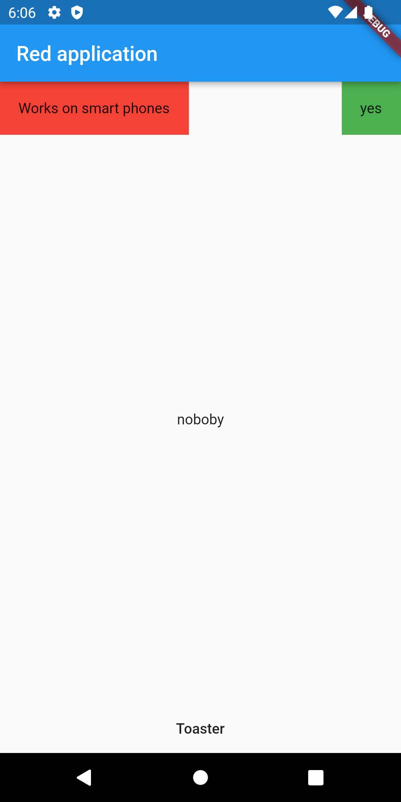
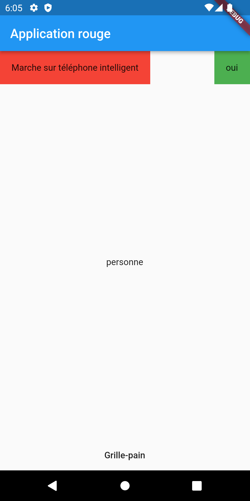

Documentation autorisée:
Tout ce que vous avez produit pendant le cours, ainsi que les repository utilisés et présentés pendant le cours.
Durée:
Vous avez 2 heures pour compléter l'examen. En cas de temps supplémentaire, jusqu'à 3 heures.
HTTP: Pour permettre les accès HTTP en plain text, n'oubliez pas de
- prendre un émulateur en API Marshmallow ou Nougat
OU- ajouter android:usesCleartextTraffic="true" dans le manifest
Serveur: Le serveur est fourni et doit être accédé en local via 10.0.2.2:8080 (émulateur) ou votreAdresseIP:8080 (appareil)
Firestore
Commence par faire une copie du projet de départ firebase_start et renomme le exo_firestore_creer.
Le projet est déjà connecté à un projet firebase.
L'initialisation est également déjà intégré.
Vous devez montrer une écriture dans Firestore.
- 1 point
Il faut un TextField haut l'application.
Il faut un bouton en haut l'application qui déclenchera l'ajout d'un document dans le firestore avec le contenu du TextField.
- 1 point
A l'appui sur le bouton, vous devez créer un document avec
- un champ "nomDeFamille" de type String où vous inscrirez votre nom de
famille
- un champ "contenu" de type String avec le contenu du TextField
- 1 point
Vous devez créer le document dans une collection appelée "final-nomdefamille" en remplaçant
par votre nom de famille.
- 1 point
Si il n'y a pas de réponse du serveur, vous devez afficher un message d'erreur dans un Toast.
Vous devez montrer une lecture dans Firestore.
-
Le reste de l'écran est rempli par un ListView.
- 2 points
La ListView contient en tout temps la liste des documents de la collection "final-nomdefamille".
Pour chaque élément, on peut voir les 2 champs du document.
Traduction
Dans un projet séparé des autres exercices, vous devez produire l'interface suivante et implanter la traduction.
- 2 points
La mise en page respecte les copies d'écran.
- 3 points
Les traductions français et anglais sont telles que vues dans les copies d'écran.


HTTP JSON et erreur
Dans un projet séparé des autres exercices, vous devez programmer une interface avec un champ texte et un bouton.
- 1 point
L'appui sur le bouton envoi une requête POST à l'URL suivante "https://exercices-web.herokuapp.com/exos/error/or/not/" avec un JSON au format suivant:
{
"nom" : "jo"
}. Tu remplaceras jo par le contenu du champ texte.
- 1 point
Si tout se passe bien affiche un SnackBar indiquant "Yeah tout est beau".
- 1 point
Si le web service renvoit une erreur, affiche un SnackBar avec "Non" suivi du contenu de la réponse.
{kind=link}
{kind=link}